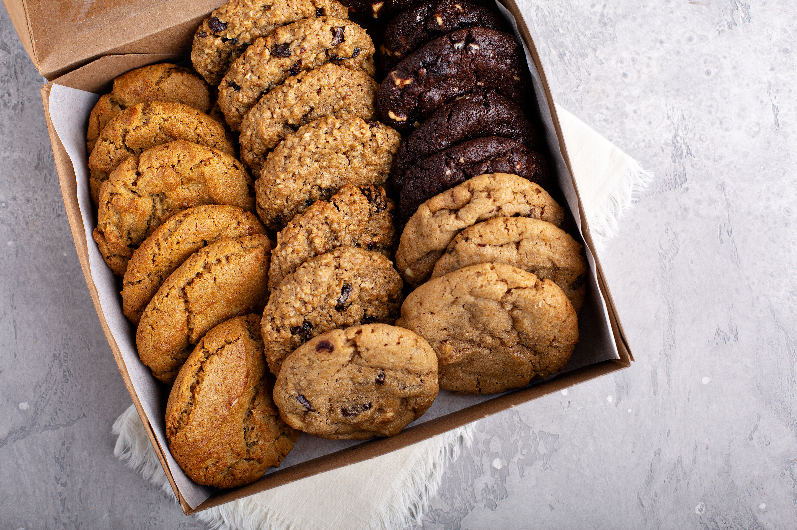

Services

Fresh Baked Cookies
fresh out the oven cookies straight to your mouthhole

Cakes for Birthdays and events
get a fun cake for you're kids birthday
Sacrifices to the Old Gods
stop by and also get sacrifices for the old nordic gods